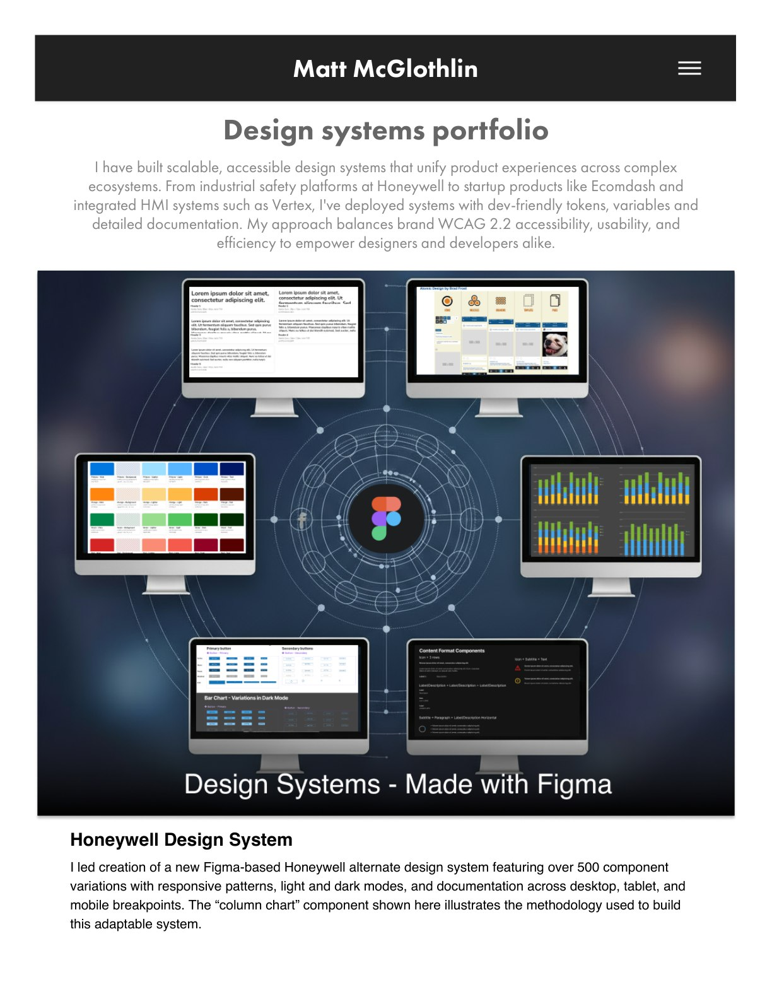
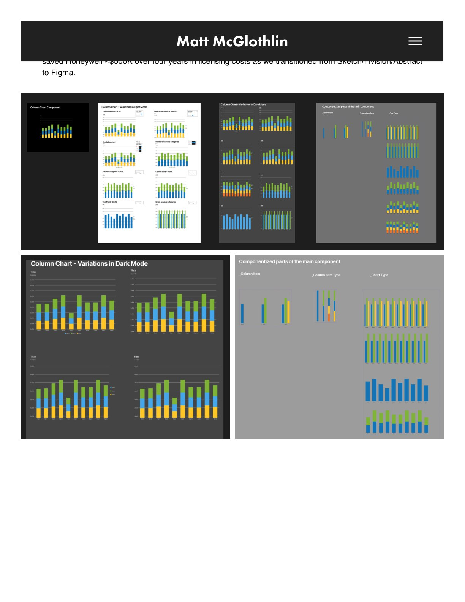
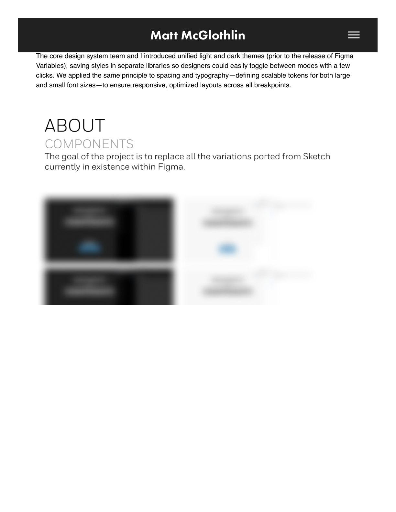
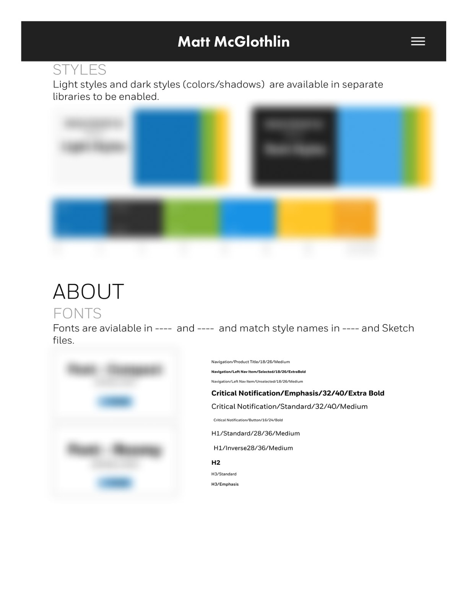
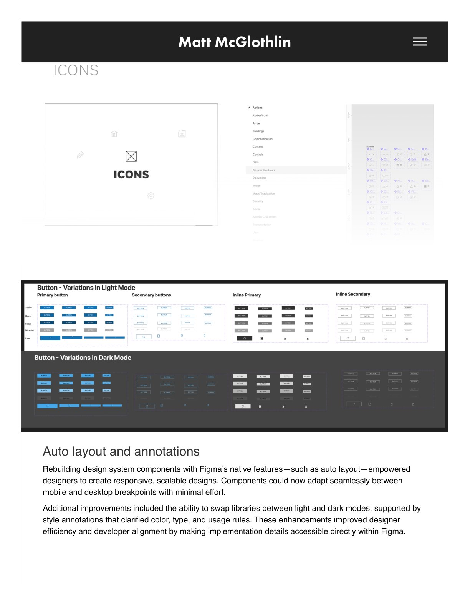
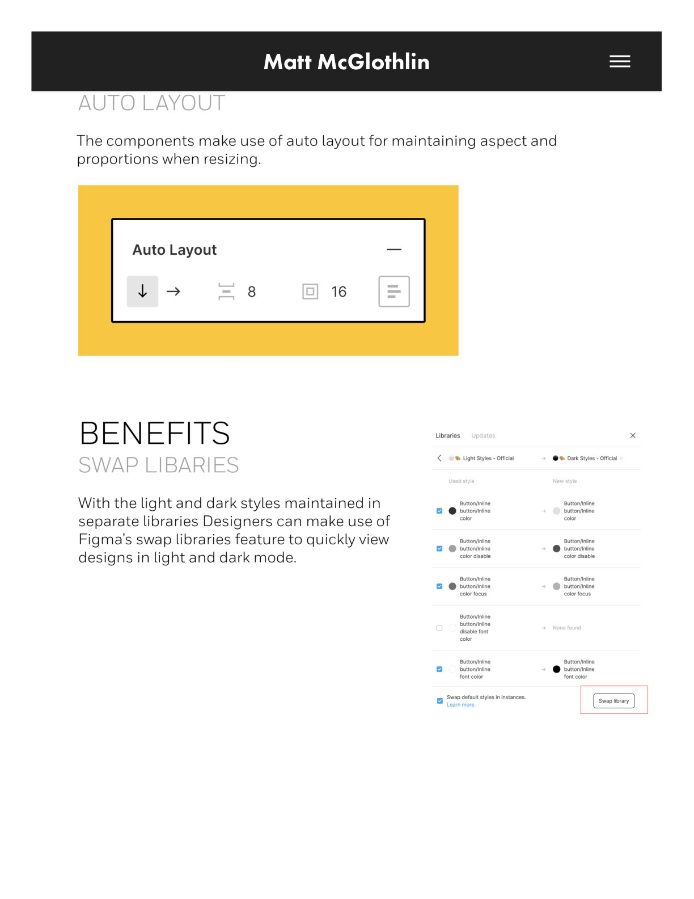

Honeywell · Figma · Design Systems · Enterprise
Honeywell Design System
A Figma-native enterprise design system — hundreds of components with responsive patterns, light and dark modes, and detailed documentation.
The Work
I led creation of a new Figma-based Honeywell alternate design system, with responsive component patterns, light and dark modes, and documentation across desktop, tablet, and mobile breakpoints — built to WCAG 2.2 accessibility standards for usability and efficiency.
The Migration
The system anchored Honeywell's transition from Sketch and InVision to Figma: consolidating scattered libraries, enabling swap libraries for light and dark theming, and adding style annotations that give developers a clear guide to code specs for quick iteration.
The Practice
Beyond the components, I built the operating model around the system — setup guides, training materials, feedback loops, and governance for releases and versioning — so adoption stuck across a global team.





